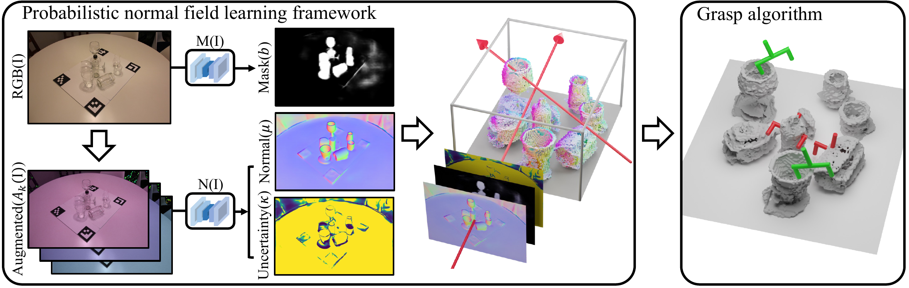
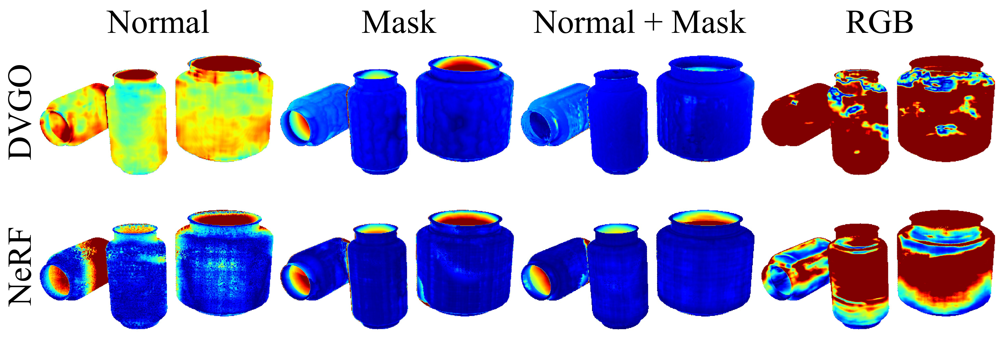
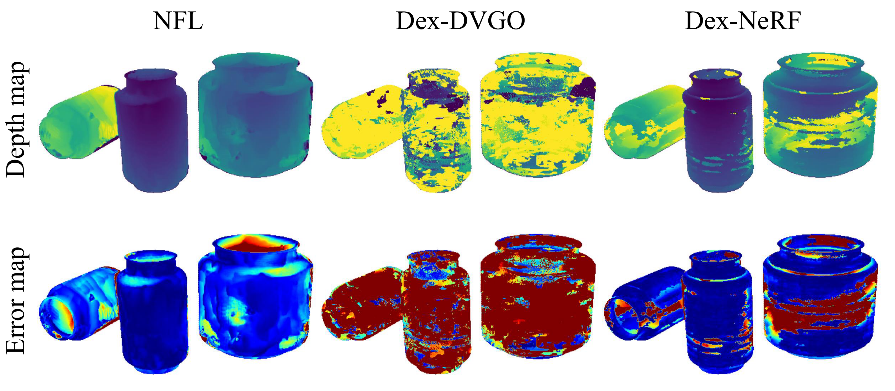
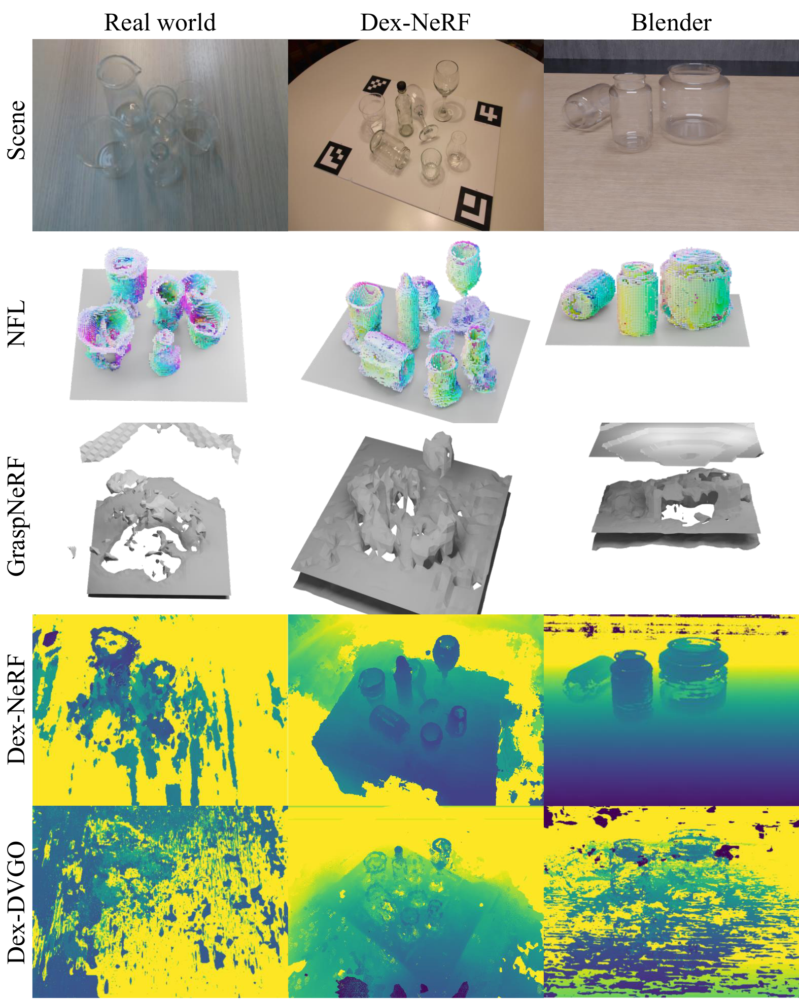
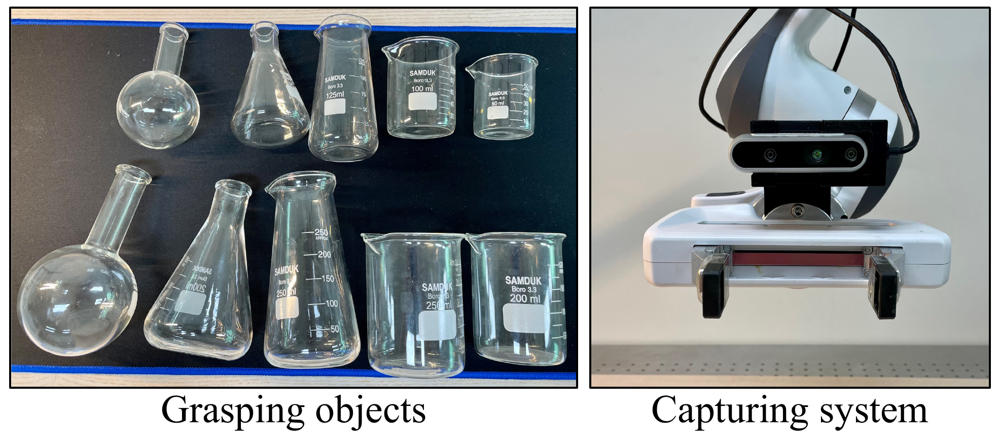

Overview video.
We present Normal Field Learning (NFL), a robust yet practical solution to perceive 3D layouts of transparent objects and grasp them quickly. Conventional input modalities do not provide sufficient information for transparent objects, but with recent advances in datasets and algorithms for transparent objects, we can obtain noisy estimates of normals and masks for various real-world conditions. Instead of directly using RGB images, we use these estimates to train a neural volume that serves as an intermediate representation ignorant of challenging appearance variations. We formulate the training objective to account for inherent uncertainty in individual estimations, and together with volumetric aggregation, we can reliably extract useful geometric information for grasping. Our neural volume deploys a voxel-grid based representation, motivated by acceleration techniques of neural radiance fields — but we directly store normal and density values in the grid cells instead of latent features, allowing direct access to geometric values without additional inference or volume rendering. Our results show over 85% success rates in grasping in cluttered scenes with only 40 seconds of training time.
Density σ means opacity — and a perfectly transparent surface has none.
Dex-NeRF and Evo-NeRF threshold σ from an RGB-trained NeRF to render a depth image. That works when the object leaves visual evidence (edges, refraction). It collapses when it doesn't.
Opacity, not existence.
For a perfectly transparent surface, the correct volume density is exactly zero — by definition. Any grasping pipeline that infers geometry from RGB-trained σ inherits this failure mode.
Existence, directly.
NFL instead regresses pixel-wise surface normal and mask estimates. Here σ is only ever asked "is a surface here," decoupled entirely from how transparent that surface looks in RGB.
A probabilistic normal field, trained without RGB or MLPs.
Pre-trained networks give noisy per-pixel normal and mask estimates; NFL aggregates them into a coherent volume, weighting each pixel by how much to trust it — then grasps directly off the grid.
Stochastic normals & masks from RGB
A pre-trained estimator predicts normals under m color-jittered augmentations of each image; the spread of the m outputs at a pixel becomes its uncertainty, fit as a von Mises–Fisher distribution on S². The segmentation mask's per-pixel probability is modeled as a Bernoulli distribution.
Maximum-likelihood volume rendering
Standard NeRF-style ray marching accumulates n(x) and σ(x) into a projected normal per pixel, then minimizes its negative log-likelihood under the fitted vMF distribution — so confident (high-κ) pixels dominate the loss, sampled through the Bernoulli mask so background rays never contribute.
Feature-free voxel grid
Built on DVGO's grid acceleration, but with the intermediate MLP removed entirely: each grid cell stores raw density and normal values, not latent features. A full scene trains in ~40 seconds from 30 real images.
Grasp candidates & collision-free planning
Threshold the density grid for surface points, pair up antipodal points within gripper width where both normals face each other (n·(x₂₁) ≥ 0.99), rank by summed density, then test 8 pitch angles per candidate against the surface point cloud for a collision-free path via PyBullet.

Normals and masks reconstruct transparent geometry — RGB doesn't.
Same images, same camera poses, four input modalities. Depth accuracy δτ is the fraction of object pixels within τ of ground-truth depth (ClearGrasp protocol), on both grid-based (DVGO) and non-grid-based (NeRF) backbones.

| Threshold | Normal (DVGO) | Mask (DVGO) | Normal+Mask (DVGO) | RGB (DVGO) | Normal (NeRF) | Mask (NeRF) | Normal+Mask (NeRF) | RGB (NeRF) |
|---|---|---|---|---|---|---|---|---|
| δ0.05 | 11.48% | 90.57% | 96.85% | 19.13% | 83.01% | 89.94% | 93.40% | 27.17% |
| δ0.10 | 72.30% | 94.18% | 97.52% | 38.02% | 92.26% | 94.33% | 96.97% | 56.25% |
| δ0.25 | 99.10% | 97.78% | 98.17% | 82.47% | 99.66% | 98.72% | 99.93% | 93.81% |
Masks alone miss concave parts of a bottle; normals alone are noisy on a grid backbone. Combined, they beat RGB by 40–80 points at the tightest threshold.
Best reconstruction, best grasp success, and an order of magnitude faster.
Evaluated against NeRF, DVGO, Dex-NeRF, Dex-DVGO (our thresholded-DVGO baseline) and GraspNeRF, on a photorealistic Blender scene and a real Franka Panda + RealSense D435i setup.

| Model | δ0.05 | δ0.10 | δ0.25 | Train time |
|---|---|---|---|---|
| NFL | 85.35% | 92.64% | 97.49% | 2 min |
| Dex-DVGO | 20.48% | 29.25% | 46.50% | 15 min |
| DVGO | 19.13% | 38.02% | 82.47% | 15 min |
| Dex-NeRF | 74.96% | 81.39% | 95.15% | 12 hr |
| NeRF | 27.17% | 56.25% | 93.81% | 12 hr |
Removing the MLP that grid-based baselines need for novel-view synthesis is what takes NFL from 15 minutes to 2 minutes.


| Model | Single Small | Single Big | Clutter | Time |
|---|---|---|---|---|
| NFL | 71.43% | 57.14% | 85.71% | 40 sec |
| GraspNeRF | 14.28% | 14.28% | 28.57% | 90 ms |
| Dex-NeRF | 28.57% | 0% | 28.57% | 12 hr |
| Dex-DVGO | 0% | 0% | 0% | 15 min |
| NeRF | 0% | 0% | 14.28% | 12 hr |
| DVGO | 14.28% | 0% | 0% | 15 min |
Every baseline collapses on Single Big, where the grasp width is comparable to the open gripper and pin-point geometry is required. NFL still succeeds over half the time. In Clutter, its rich, holistic reconstruction gives more candidate grasps to choose from — GraspNeRF answers fastest but its geometry is the least reliable of the two runners-up.
What NFL adds.
Trains the neural volume from estimated surface normals and masks rather than raw RGB, giving markedly more accurate geometric reconstruction for transparent objects.
A probabilistic framework robust to prediction errors, modeling normal uncertainty as von Mises–Fisher and mask uncertainty as Bernoulli, both folded into the training loss.
Removes the MLP that grid-based NeRF variants keep for novel-view synthesis, since normal fields don't need it — cutting training to ~40 seconds.
Grasps directly from grid values — no volume rendering of depth images required — unlike prior NeRF-based grasping work (Dex-NeRF, Evo-NeRF).
Honest edges.
NFL reconstructs accurate, holistic 3D geometry of transparent objects in 40 seconds and grasps reliably across configurations — with room to grow.
Still slower than feed-forward methods. Even with the MLP removed, NFL is slower than GraspNeRF's ~90ms inference; faster training would help refresh geometry mid sequential-grasping.
Needs a bounded, surrounded workspace. NFL reconstructs from images captured around a known volume — it wasn't evaluated on datasets like HAMMER, which only image objects from one side.
BibTeX
@article{lee2024nfl,
author={Lee, Junho and Kim, Sang Min and Lee, Yonghyeon and Kim, Young Min},
journal={IEEE Robotics and Automation Letters},
title={{NFL}: Normal Field Learning for 6-{DoF} Grasping of Transparent Objects},
year={2024},
volume={9},
number={1},
pages={819-826},
doi={10.1109/LRA.2023.3336108}
}